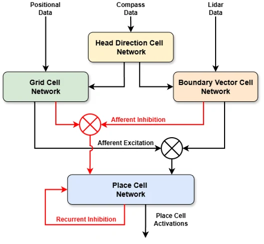

The Role of Grid Cells in Reducing Spatial Aliasing in Hippocampal Place Representations
Grid-cell signals substantially reduce spatial aliasing in BVC-based hippocampal place representations, especially in visually symmetric environments.
- Spatial Intelligence
- Spatial Memory
- Geometry-Aware Models